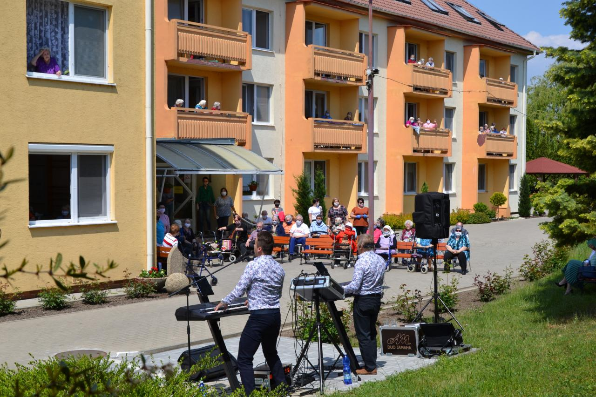
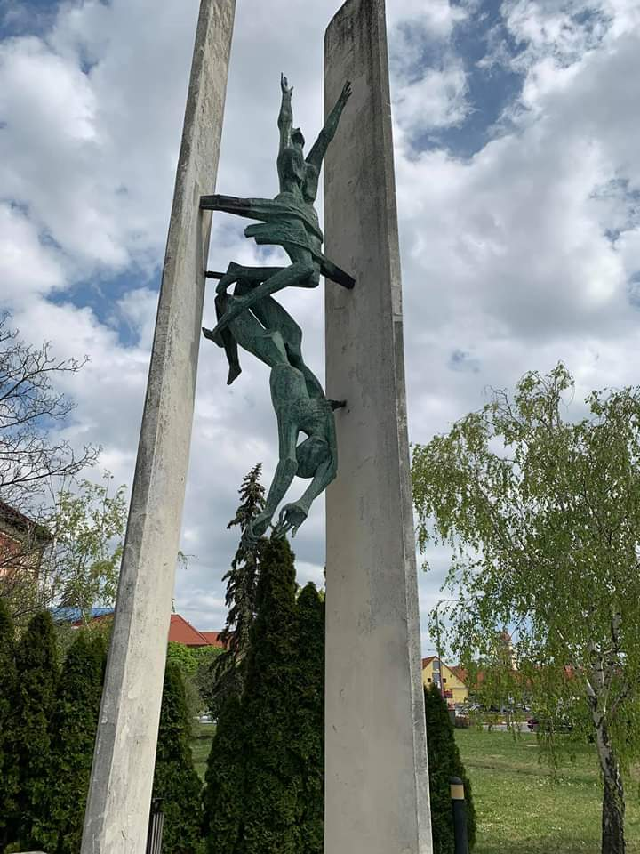
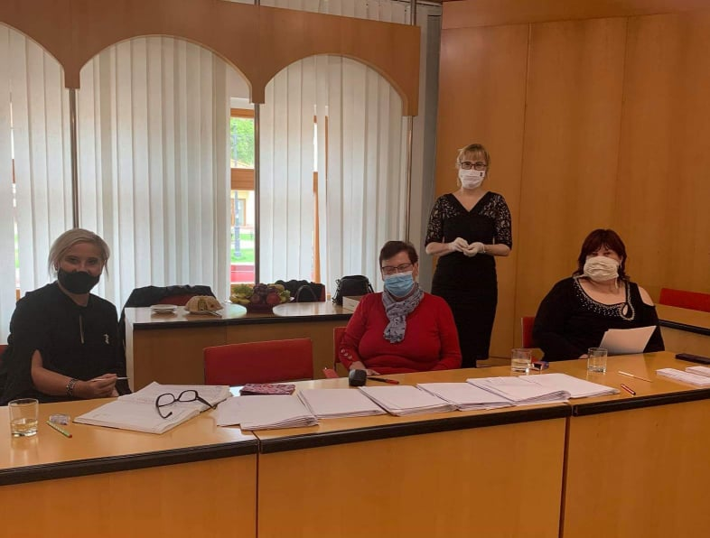
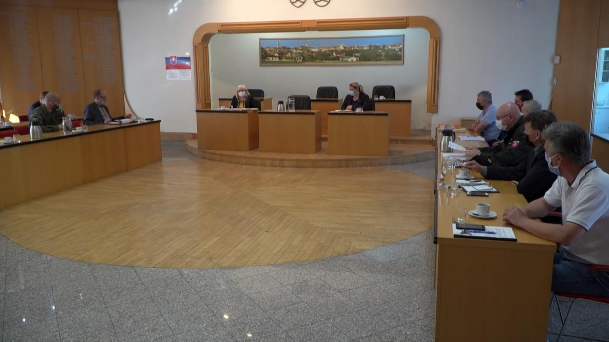

Oznamy
Ponuka pracovných miest
14.5.2020
Základná škola, Strážnická 1, Skalica hľadá učiteľa.pdf
Typ súboru: PDF dokument, Velkosť: 277,71 kB
Základná škola, Strážnická, Skalica hľadá vychovávateľa - asistenta.pdf
Typ súboru: PDF dokument, Velkosť: 278,68 kB
Základná škola, Strážnická 1, Skalica hľadá upratovačku.pdf
Typ súboru: PDF dokument, Velkosť: 275,27 kB
Letná turistická sezóna v Skalici (30. mája 2020)
13.5.2020
Prehliadky mesta Skalica bude možné absolvovať v anglickom, nemeckom aj francúzskom jazyku. Turistická informačná kancelária tiež ponúka počas prehliadky možnosť zažiť nezabudnuteľný zážitok a vypočuť si zvuk organu v Jezuitskom kostole. Okrem toho bude možné vidieť spustenie Mlynu bratov Pilárikových – unikátna funkčná technická pamiatka.
Turistická informačná kancelária uverejňuje všetky potrebné a dôležité informácie o možnostiach trávenia voľného času, stravovacích, ubytovacích zariadeniach, pozvánky na aktuálne podujatia, ale takisto správy o uskutočnených podujatiach a mnoho ďalšieho na svojom webovom sídle –
www.tikskalica.sk. Na tomto mieste je taktiež možné nájsť interaktívny kalendár podujatí.
Otváranie prevádzok
7.5.2020
- Turistická informačná kancelária
-
je od 6.5.2020 (streda) otvorená pre verejnosť nasledovne:
Pondelok: 8:00 – 14:00
Streda: 8:00 – 14:00
Piatok: 8:00 – 14:00
- Otváracie hodiny: Vinotéka
-
Pondelok - štvrtok: 10:00 - 17:00
Piatok - sobota: 10:00 - 19:00
Nedeľa - zatvorené
Štátny sviatok - zatvorené
Vonku bude pred vinotékou posedenie
- Mestská knižnica Skalica
-
bude otvorená od 11.5.2020 v obmedzenom režime a to:
Pondelok: 9.00- 11.00 13.00-15.00 hod
Utorok: Zatvorené
Streda: 10.00-12.00 13.00-16.00 hod
Štvrtok: Zatvorené
Piatok: 9.00-12.00 13.00- 15.00 hod
Autobusová doprava bude prevádzkovaná v prázdninovom režime
5.5.2020
S platnosťou od 10.05.2020 (nedeľa) bude verejná pravidelná autobusová doprava prevádzkovaná v prázdninovom režime.
Prechod prímestskej autobusovej dopravy do režimu "pracovný deň, školské prázdniny" je zavádzaný v súvislosti s predpokladaným postupným uvoľňovaním opatrení na zabránenie šírenia koronavírusu COVID - 19 na celoštátnej úrovni od 06.05.2020 (2. fáza Plánu uvoľňovania opatrení). Naďalej platí podmienka pre cestujúcu verejnosť a to, že cestujúci v hromadnej doprave musia mať prekrytie tváre, resp. ochranu dýchacích ciest.
Taktiež je potrebné informovať o skutočnostiach, že je vhodné:
• Maximálne uprednostniť bezhotovostné platby, čím bude minimalizovaný kontakt pri hotovostnej platbe.
• Maximálne využívať možnosti e-shopu na nabíjanie čipovej dopravnej karty.
• upozorniť cestujúcich, o dostupnosti kreditu, ktorý nie je možné požiť ihneď a je nutné počkať 24 hod. a dopravná karta sa aktivuje prvým priložením k palubnému počítaču v autobuse.
Potvrdenie o žití
5.5.2020
Česká správa sociálního zabezpečení oznamuje dôchodcom, poberajúcim dôchodok z Českej republiky, že počas mimoriadnych opatrení, týkajúcich sa koronavírusu, nevyžaduje overený vlastnoručný podpis na potvrdeniach o žití.
Vyplnené a podpísané tlačivo sa zašle poštou na Českú správu sociálního zabezpečení alebo preskenované zašle mailom na adresu: posta@cssz.cz
Viac na:
Česká správa sociálního zabezpečení
Udalosti
Duo Jamaha seniorom
V nedeľu 17. mája prišla klientov Zariadenia pre seniorov a Jesénia Skalica piesňami pozdraviť azda najznámejšia hudobná dvojica u nás, Duo Jamaha.
V sprievode viceprimátorky Veroniky Hanzalíkovej prišla aj primátorka Anna Mierna, ktorá pozdravila klientov i zamestnancov a predovšetkým poďakovala členom Dua Jamaha za to, že nezištne, bez nároku na honorár prišli seniorom spríjemniť nedeľňajšie popoludnie a dlhotrvajúcu karanténu. Poďakovanie zaznelo aj z úst riaditeľky ZpS Martiny Štepanovskej. Bolo veľmi príjemné vidieť usmiate a rozžiarené tváre seniorov (ale i zamestnancov), ktoré sa niekoľko desiatok minút s známymi piesňami a oboma hudobníkmi veľmi dobre zabávali.
8. MÁJ - Deň víťazstva nad fašizmom
Je to už 75 rokov čo sa svet vysporiadal s najväčším konfliktom v dejinách.
Naši rodičia a starí rodičia zažili hrôzy, ktorí si mi už ani nevieme predstaviť.
Pamätám si historky, ktoré vždy končili varovaním pred tým, aby sme niečo podobné už nikdy nedovolili. Bohužiaľ aj dnes sa v našej spoločnosti objavuje nenávisť a prejavy fašizmu. Nedovoľme, aby sa to opäť vrátilo. S úcty k obetiam vojny,a s úcty k našim predkom. Pretože oni to museli prežiť, aby sme my už nemuseli.
Zápis do Materskej školy
Na zápis do MŠ sa zapísalo 165 detí.
Všetky zapísané deti budú k novému školskému roku 2020/2021 do MŠ prijaté. Zápis prebiehal v budove mestského úradu Skalica vo veľkej zasadačke. Všetky hygienické opatrenia boli počas zápisu dodržané. Najväčší počet rodičov prišiel na zápis v ranných hodinách. Jednotlivé elokované pracoviská MŠ sa postupne zaplnili. Cez letné prázdniny sa budú vydávať rozhodnutia o prijatí detí do materskej školy, presný dátum vydávania rozhodnutí bude zverejnený na webovej stránke materskej školy a tiež na webovej stránke Mesta Skalica. Rodičom ďakujeme za dodržiavanie hygienických opatrení a za bezproblémový priebeh zápisu do materskej školy.
Krízový štáb okresu Skalica, 30.4.2020
Aktuálne informácie z okresu Skalica

www.youtube.com/watch?v=sYIIfwAoZWI&t=15s